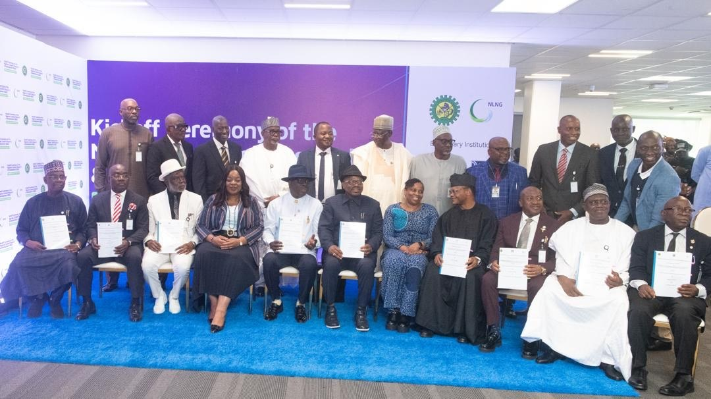

NCDMB, NLNG commits US$9m to endowment of professorial research chairs in Six Nigerian universities

The Nigerian Content Development and Monitoring Board (NCDMB) and Nigeria LNG Limited (NLNG) have launched a US$9 million programme to establish professorial research chairs at six Nigerian universities. Each institution is to receive US$1.5 million to support a specialist chair focused on agreed industry priorities and the development of practical, commercially viable solutions.
The University of Ibadan will research natural gas processing, pollution control and environmental management. Rivers State University will focus on digital engineering, intelligent energy systems, automation and asset integrity. Modibbo Adama University will work on energy transition and the environment, while Aliko Dangote University of Science and Technology will study sustainable energy innovation and climate-resilient food systems. The University of Nigeria, Nsukka, will focus on green energy production and geoenvironmental engineering. Yakubu Gowon University, formerly the University of Abuja, will research geoscience and satellite intelligence for resilient gas infrastructure.
At the programme’s launch, NLNG Managing Director and Chief Executive Officer Adeleye Falade said sustained research was needed as energy technologies and systems evolve. He identified operational efficiency, emissions management, safety, infrastructure maintenance and more sustainable industrial processes as areas where research could contribute. He also called for stronger cooperation between government, industry and universities, including through researcher exchanges, practical testing and postgraduate curriculum development.
NCDMB Executive Secretary Felix Omatsola Ogbe described the endowment as an investment in Nigeria’s research and innovation system. He said it complements the board’s research infrastructure investments, including research and development centres of excellence at six universities. The beneficiary institutions are expected to set clear research objectives, measure results, use funds prudently and work with industry partners to move findings towards application and commercialisation.
The programme also provides for minor building works and infrastructure upgrades to create suitable research centres. The universities will jointly host an information management hub to support knowledge sharing and exchanges. Proposed arrangements would allow industry professionals to contribute practical expertise while pursuing postgraduate degrees, strengthening links between academic research and industrial problem-solving. Rivers State University’s Research and Innovation Centre for Computer and Electrical Engineering is envisaged as a coordinating point for collaboration among the institutions.
Source: Premium Times